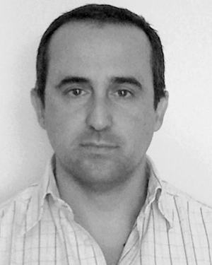

Signal & Communications Group
Institut de Recherche en Informatique de Toulouse (IRIT)
University of Toulouse, France

Menu:
Invited Professors/Scientists
Each year, the SC group hosts invited professors or scientists. Here is a list of visiting scholars who spent several weeks in the group.

Antonio Napolitano is with University of Napoli Parthenope, Italy.
Jose M. Bioucas-Dias is with Instituto Superior Técnico, Liboa, Portugal.
Ami Wiesel is with Hebrew University of Jerusalem, Israel.
Fredrik Andersson is with Lund University, Sweden.
Philippe Ciuciu is with CEA/NeuroSpin & INRIA/Parietal.
Marco Lops is with University of Cassino.
Gerald Matz is with Vienna Univ. of Technology, Austria.
Steve McLaughlin is with University of Edinburgh, UK.
Monica Bugallo is with Polytechnic University of Stony Brook, USA.
José C. M. Bermudez is with Federal Univ. Santa Catarina, Brazil.
Josep Vidal is with Polytechnic Univ. of Catalonia, Spain.
Miroslav Pawlak is with University of Manitoba, Canada.
Arnaud Doucet is with University of British Columbia, Canada.
Petar M. Djuric is Professor in the Department of Electrical and Computer Engineering at Stony Brook University, New York. He visited the TéSA Laboratory in 2000 and 2002.
During his first visit, he worked on several problems. One of them was detection and classification of digital modulations, and as a result of this collaboration, two papers were published, one in the journal Monte Carlo Methods and Applications (with S. Lesage and J.-Y. Tourneret) and one in the Proceedings of the IEEE ICASSP conference in 2001 (with S. Lesage and J.-Y. Tourneret). He also worked on particle filtering problems, which led to a publication presented at IEEE ICASSP in 2001 (with J. Kotecha, J.-Y. Tourneret, and S. Lesage). Finally, he investigated the problem of model selection in non-stationary time series. With this work, a new model selection strategy based on the theory of Gerschgorin disks was developed, whose description can be found in a paper published in the proceedings of IEEE ICASSP 2001 (with P. Michel and J.-Y. Tourneret).
During his second visit, he worked with Corinne Mailhes and David Bonacci on improving frequency resolution for correlation based spectral estimation using subband decomposition. The results of this work were presented at IEEE ICASSP in 2003. One of his talks on the educational system in the US was well received by students and faculty members of ENSEEIHT. He was a member of the Ph.D. committee of Patrice Michel and the Habilitation à Diriger les Recherches of Corinne Mailhes, both held in Toulouse in July 2003.
In 2001, Prof. Djuric hosted two students from ENSEEIHT, F. Esteve and E. Perret. With them he published one journal and one conference paper, both on the theory of particle filtering. In 2003, he hosted two other ENSEEIHT students, A. Nollet and I. Marque. With them and J.-Y. Tourneret, he worked on a SAR imaging problem.
Franz Hlawatsch is professor at the Vienna University of Technology in Austria.
During two one-month visits in the SC group in 1999 and 2001, he collaborated with Marie Chabert and Jean-Yves Tourneret on segmentation of SAR images. This work resulted in a paper presented at the ICASSP in 2002. In 1997, Franz Hlawatsch was a member of the Ph.D. committee of Marie Chabert.
Ananthram Swami is with the Army Research Lab., Adelphi, USA.
He visited the SC Group (previously SIC group from LEN7) in 1997, 1998, and 2000. He worked on different projects related to higher order statistics in collaboration with Martial Coulon and Jean-Yves Tourneret. As a result of these activities conducted in 1997, 1998, and 2000, two journal papers have been published in the IEEE Trans. Signal Processing (December 1999 and September 2000) and one IEEE ICASSP conference paper in 1998. Ananthram Swami participated as a reviewer for the Martial Coulon's Ph.D. defense in July 1999 and for the Jean-Yves Tourneret's Habilitation à Diriger les Recherches (HDR) in March 1998. He has also been intensively working with Mounir Ghogho (who was Ph.D. student in the group) on various statistical signal processing problems. They have published many journal and conference papers.
Neil J. Bershad is Emeritus Professor at University of California-Irvine, USA.
During his visits, he worked with Jean-Yves Tourneret on echo cancelation problems. Application of statistical detection methods allows channel non-stationarities to be detected during a phone call (double-talk phenomenon). This works leads to several publications, among them an IEEE ICASSP paper in 2006 and an article published in IEEE Trans. Signal Processing.